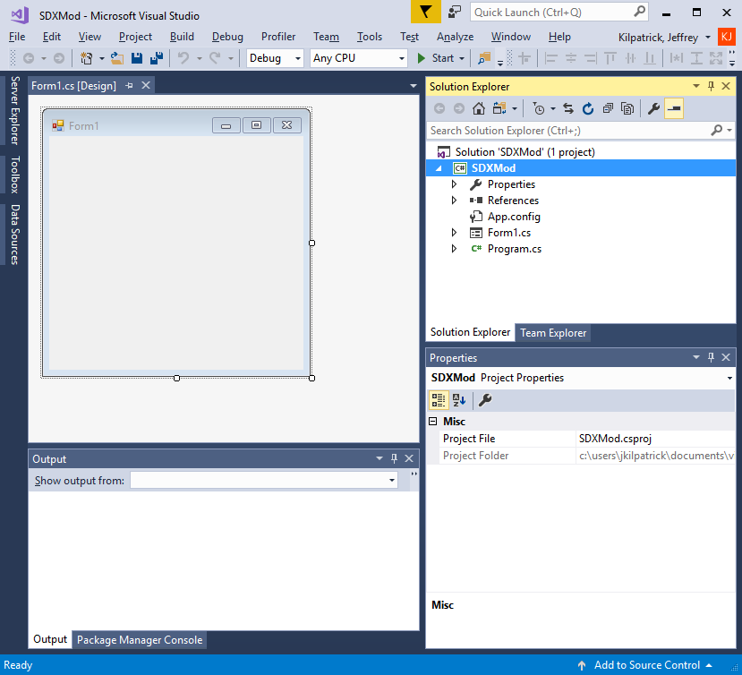

In the Solution Explorer, click on SDXMod

In the Properties screen, you'll see the Project Folder. Copy and Paste that into your Clip board.
Open up a Windows Command Prompt (as Administrator):
The command we are going to run is the mklink command. This will create a Windows Symlink from your SDX Folder to your Visual Studio Project.
We want to make a link between your Visual Studio project, and the SDX Folder.
The syntax is:
mklink /D "Your Project Folder" "YourSDX Mods Folder"
Example:
mklink /D "c:\users\jkilpatrick\documents\visual studio 2017\Projects\SDXMod\SDXMod\Mods" C:\SDXModding\SDX0.7.1\Targets\7DaysToDie\Mods
The first part of the command points to your Visual Studio Project, and to a non-existent "Mods" folder.
The second part of the command points to where your SDX Target Files are.
Back in your Visual Studio Project, go to your Solution Explorer, and look for "Show All Files"
After you click on Show All Files, you'll see some faded folders:
Right click on the Mods folder, and choose Include In Project:
Click on the Mods folder, and drill down through your Mod files.

Created with the Personal Edition of HelpNDoc: Free Kindle producer